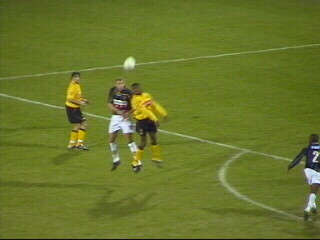

|
Roda JC - Vitesse (2-0) 8 februari 2003 |
Sfeer op west bij aanvang van Roda-Vitesse.
Het gigantische ENECO-shirt zeilde deze keer
over sfeervak Z16.
Een ongekende weelde in het PLS: Roda komt
al in de 6e min. op een 1-0 voorsprong middels
een goal van Anastasiou.
Jan van Halst: bikkelaar, maar ook een irritante
gast!
Gecompliceerde verwikkeling, ontstaan nadat
een speler van Vitesse de bal uit handen van
Roorda trapt en een vermeend doelpunt scoort.
Er waren niet meer dan een dikke 100 supporters
uit Arnhem!
Sonkaya scoort 2-0 (79e min.).
Vrolijk :)

In de 80e min. draaft zowaar onze ex-vriend
Bob op.
Roda boekt een zeer belangrijke zege en neemt
de vierde plaats in. Hier wordt zuid bedankt!
En west!
Rudge vermaak zich temidden van de westside.
In het midden: Jack (Arnhem) en Guus (Reuver).
Kofieboer analyseert de inhoud van de
verschillende bekertjes.
Vlnr: Guus, Cristiano, KB, Brouwers.
This one goes out to Ivan!!!!